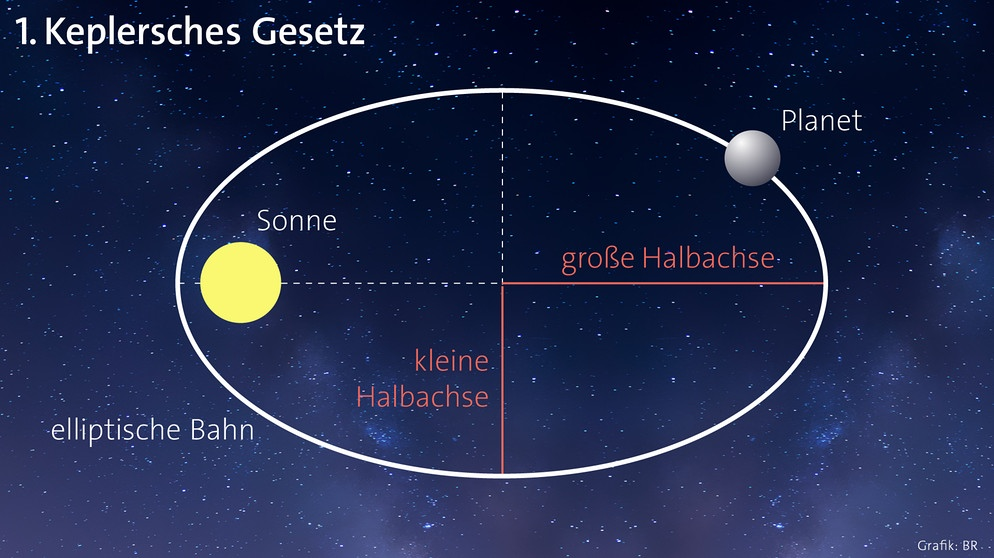

Das 1. Keplersche Gesetz
Planeten kreisen auf elliptischen Bahnen um die Sonne
Wiederholung
Auf dieser Seite gibt es keine Aufgaben. Lies sie dir einfach durch und sieh sie als Übersicht und Wiederholung zum ersten keplerschen Gesetz. Danach geht es mit dem zweiten Gesetz weiter.
Übersicht

[2]: Schematische Darstellung des ersten keplerschen Gesetzes.
Das erste keplersche Gesetz ist gewissermaßen die Grundlage, mit der man das heliozentrische Weltbild erklären kann. Das Gesetz besagt, dass Planeten die Sonne auf elliptischen Bahnen umkreisen, in deren einem Brennpunkt die Sonne steht. Laut Johannes Kepler ist das auch bei anderen Systemen der Fall, beispielsweise bei Monden, die um Jupiter kreisen.
Absage an die göttliche Ordnung
Johannes Kepler war selbst gläubig. Und doch widersprach er mit dem ersten Gesetz gleich zwei bis dato unumstößliche Vorstellungen in der Kirche. Indem Kepler mathematisch bewies, dass die Planeten alle um die Sonne kreisen, stellte er sich gegen die Überzeugung, die Erde stünde im Mittelpunkt der Schöpfung Gottes. Gleichzeitig ging man davon aus, die vollkommene und perfekte Welt, die Gott schuf, wäre ausschließlich mit vollendeten Formen gefüllt. Demgegenüber stand Keplers Meinung, es gebe keine perfekt runden Umlaufbahnen und jede ist eine Ellipse.
Kleine und große Halbachse
Die kleine und große (Bahn-)Halbachse beschreiben die Ausdehnung und Form einer Umlaufbahn. Wie im Bild oben kann man die Ellipse an zwei Achsen spiegeln. Es sind die beiden Achsen jeweils von der größten und kleinsten Ausdehnung. Jeweils die Hälfte davon (vom Mittelpunkt nach außen) ist dann die kleine bzw. große Halbachse. Wenn die beiden Werte stark voneinander abweichen, bedeutet dies, dass die Bahn exzentrischer ist, also weiter entfernt von der Kreisbahn.